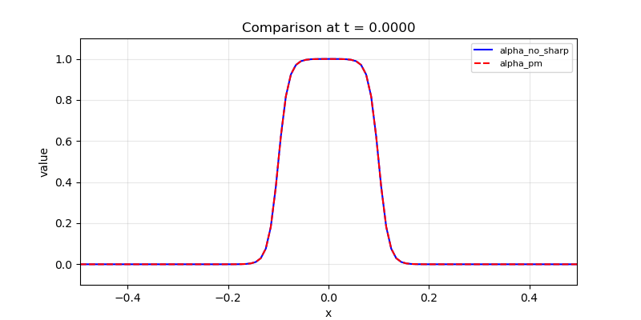
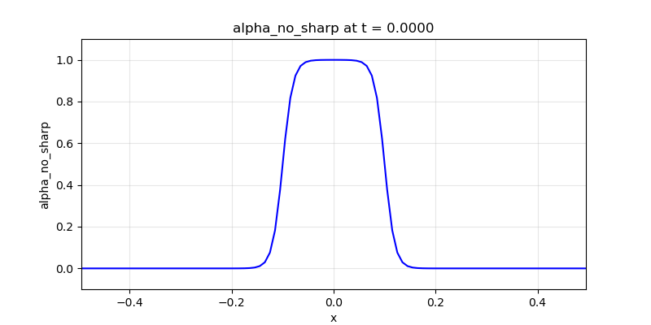
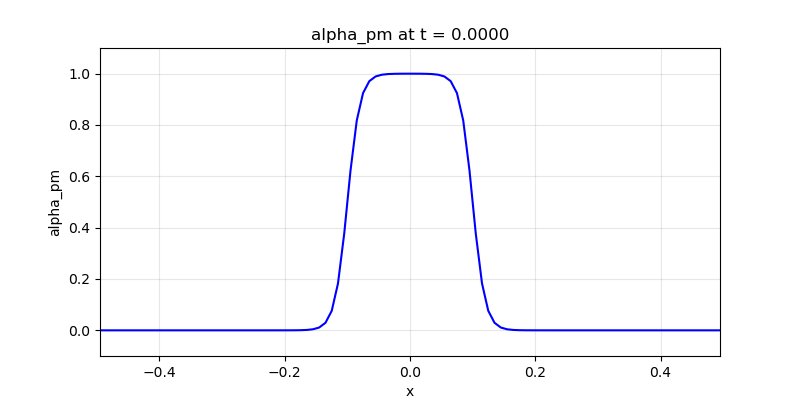

tanh_hat_10_rev_compare
Description
1D comparison of no sharpening vs PM sharpening over 10 revolutions using the gif monitor with compare_fields and per-field sharpening control. Two fields share the same tanh-hat initial condition; only one has sharpening enabled.
How to run
python run.py unit_tests/tanh_hat_10_rev_compare.yamlThe YAML lives in unit_tests/; each run copies it into the timestamped run folder (original remains for easy re-running).
Config summary
- Domain: 1D cell-centered, x ∈ [-0.5, 0.5], 100 points (dx = 0.01)
- Time: dt = 0.01, 2000 steps (T = 20 s, 10 revolutions)
- CFL: 0.5
- Velocity: 0.5
- Fields:
alpha_no_sharp: tanh-hat, sharpening: falsealpha_pm: tanh-hat, sharpening: true (PM)
- Solver: upwind; Timestepper: euler
- Sharpening: PM, eps_target 0.02, strength 1.0 (per-field control)
- Monitors: console, gif with compare_fields (every 10 = 201 frames), individual GIFs
Key features demonstrated
- Per-field sharpening: Each field overrides the global sharpening with
sharpening: true/false - Unified gif monitor: Using
compare_fieldsoverlays multiple 1D fields on the same plot
Output
Comparison GIF (201 frames). Use the slider to scrub through frames. Blue solid = no sharpening, red dashed = PM sharpening.

Individual field GIFs
No sharpening (alpha_no_sharp):

PM sharpening (alpha_pm):

Config (YAML)
# 1D comparison: no sharpening vs PM over 10 revolutions
domain:
x_min: -0.5
x_max: 0.5
n_points: 100 # dx = 0.01
time:
dt: 0.01 # CFL = 0.5
n_steps: 2000 # 10 revolutions = 20 s
velocity: [0.5]
fields:
- name: alpha_no_sharp
initial_condition: "0.5 * (tanh((0.1 + x) / 0.02) + tanh((0.1 - x) / 0.02))"
boundary:
type: periodic
sharpening: false
- name: alpha_pm
initial_condition: "0.5 * (tanh((0.1 + x) / 0.02) + tanh((0.1 - x) / 0.02))"
boundary:
type: periodic
sharpening: true
solver:
type: upwind
sharpening:
enabled: false
method: pm
eps_target: 0.02
strength: 1.0
output:
monitors:
- type: console
- type: gif
every_n_steps: 10 # 201 frames
compare_fields:
- field: alpha_no_sharp
color: blue
linestyle: "-"
- field: alpha_pm
color: red
linestyle: "--"
- type: gif
every_n_steps: 10
field: alpha_no_sharp
- type: gif
every_n_steps: 10
field: alpha_pm